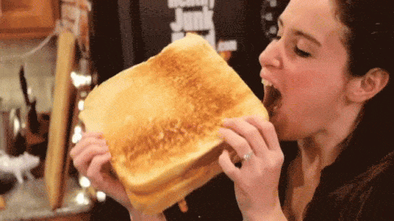
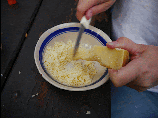
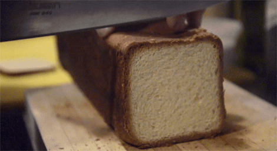
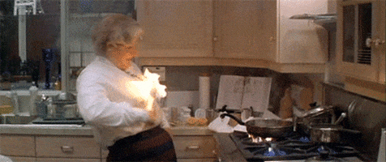
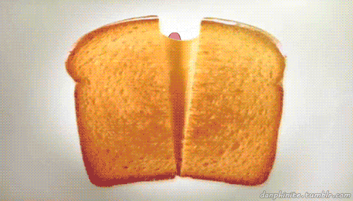

Cheesetoast

Ingredients
- Two slices of bread
- Butter, of any kind
- Cheese of your preference. The more the better.
- Optional
- Mayonaisse
- Pickle
- Protein source
- Ham
- Pulled pork
- A day old chicken roast, pulled
Let's make them toast!
- Cheese

- If you are using 1 kind of cheese, simply skip this first step.
- Ratio, if you bougie
- By default, 1:1:1 is just nice, BUT
- If you are going for the gooeyness, then you might want to stack more on the Gruyere
- If you want the stink-kick, then stack more on the Gouda
- Whatever you choose, its okay cause its your cheesetoast.
- Then mix all of them and place in a separate bowl.
- Bread

- Slap butter on both, I repeat, BOTH sides of the bread.
- Optional, you can substitute the butter for mayonaisse, or you can slap BOTH of them. It makes the bread more decadent.
- Heat up a pan, preferably a thick-bottom pan, low to medium heat.
- Butter them pan. NO, you cannot use mayonaise this time. Don't ever think of it. Keep the heat low to medium, making sure the butter aren't burnt.
- Once the butter melts, place the breads on the pan
- After 1 min or less, slightly raise and look for the golden brown on the bread. If not, then keep them there till its golden brown.
- Once golden brown, flip the breads.
- Combining all the majeezeus together

- Assemble the cheeses, your protein of choice on one of the bread, a generous line of mayonaise, and another layer of cheese. YES. You heard me right, just trust the process.
- THIS IS IMPORTANT. Cover the pan with a lid, or another pan, or a plate, or whatever you have to close the pan.
- What have we done here is letting the cheese to melt, creating a surface perfect for the other bread to land on completing our cheesetoast. If you skip this step, you would have a slip-prone cheesetoast due to the bread can't properly stick
on the cheese. Or, you would take one more huge uncomfortable step of flipping the already heavy cheese layered bread onto the other bread. Now, this is perfectly okay, but we want a simple and hassle-free job, so i wouldn't recommend
it.
- After 15 seconds, open the lid and smack the other bread onto our layer of cheese.
- Turn off the stove.
- Take out the completed product and place it on a plate.
Done. You have yourself a cheesetoast.

Tips
- Keep the ingredients in room-temperature before embarking on the journey. It makes your life a whole lot better.
- Time is your enemy. Prepare all the ingredients and appliances before getting your pan heated with butter. Keep them close.
- Slightly burnt bread, BAD. Burnt butter, TERRIBLE. Decadent cheesetoast all depends on the butter. So, making sure that butter stay unburnt is vital.
- Pickle. Pickle is reserved for after and while consuming the cheesetoast. It serves as a palate cleanser and to cut the greasiness from the cheesetoast. It is served together but not prepared together.
Good Luck!
Back to top